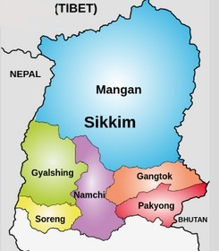

SIKKIM
Known as the
"Land of Mystic Splendour”
nestled in the heart of the
Eastern Himalayas,
Even though it is the
2nd smallest state, it’s
a jewel of India.



This small state is home to the majestic
: Sikkim is renowned for its breathtaking natural beauty. With lush green valleys, pristine lakes, and snow-capped peaks, it offers some of the most scenic landscapes in India. The state is a biodiversity hotspot, home to diverse flora and fauna, many of which are endemic to the region.It’s forest are home to rare species like the Himalayan Tahr, snow leopard ,Red panda which is also its state animal

"Land of Orchids"
as it is home to vibrant flora, including over 500 species of orchids that colour the landscape with their stunning hues.
Even though this state has the smallest population in the the country It’s linguistically rich. Languages like Nepali, Sikkimese (Bhutia), Lepcha, and English are widely spoken here. Sikkim is one of the most safest state in India with the warm hospitality of its people is a haven for nature lovers with its lush green valleys and picturesque lakes and also cultural enthusiasts as it is a melting pot of traditions and customs.